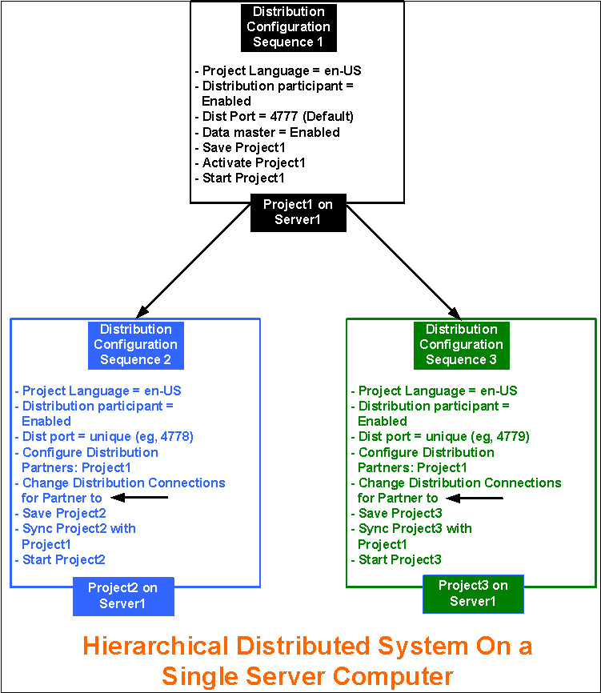
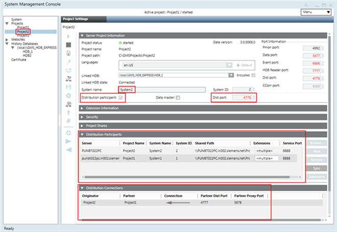
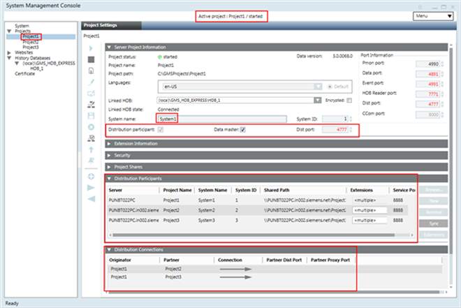
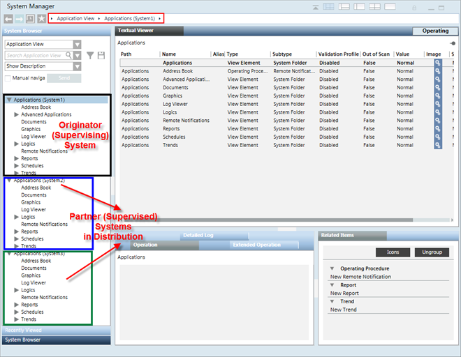
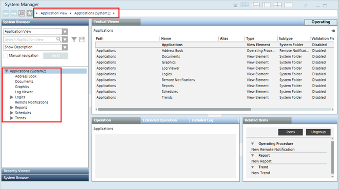

Hierarchical Distributed Systems on a Single Server
Scenario
You want to set up a hierarchical distributed system on a single server. To do this, you must configure the projects in distribution on the same server.

NOTE:
On a single Server, you can set the projects in distribution even if their security configurations are different. That is, you can set up a stand-alone project in distribution with an unsecured project or an unsecured project in distribution with a secured project and so on.
You can set up the server communication as stand-alone, if you access the Installed Client on the same server. However, if you have a remote FEP connected to the server, for working in distribution, you must set the projects with server communication as secured.
Prerequisites
On singles Server, ensure the following before configuring projects in distribution:
- Using the distribution media, you have installed the setup type of Server. The software version of Desigo CC, as well as all the extensions installed on all the distribution partner Systems is the same.
- For working with Windows App client, you have installed Internet Information Services (IIS) on the same Sever.
- In SMC, ensure the following for the projects participating in distribution:
- You have two or more projects (having unique port numbers) and with project status as
Stopped. For example, you have three stopped projects Project1, Project 2 and Project 3 with unique port numbers.
You cannot set up an outdated project in distribution, you must first upgrade it to the current software version. - The projects in distribution have a unique system name and system ID.
- The projects have the same project languages configured and their sequence is the same for all the distribution partners.
- The dist port configured in the distribution partner project is unique. Otherwise, you cannot start the project on the same Server.
- On all three projects, you have configured server communication as standalone. Additionally, on one of the project, for example Project1, you have web Server communication as local, so as to log into and work with other projects in distribution using the Windows App client.
- For working with distribution, the project's Pmon user must be set as Specific account (local or domain user). This user must have access rights on all the shared Server projects folders in distribution.
- For working in distribution using the Windows App Client, a web application is created and linked to Project1. The web application user must be added in the list of allowed users in the Project Shares expander of the systems in the distribution.
- (Recommended) Share the project folder of the distribution participant project with the user using the Project Shares expander. This is because, while configuring the distribution participant using in the Distribution Participants expander in Automatic mode, the shared project folder path displays in the Shared Path field. In Manual mode, however, you must enter the shared project folder path.
- For each project in distribution there must be a separate HDB linked to the project. The HDBs can be on the same server as that of the projects with three HDBs, or as separate HDBs on a remote SQL Server.
If the HDBs are on the same server connected to projects in distribution, they are linked to each other automatically.
When the HDBs are on different SQL Servers and you want the projects to see the data from another SQL Server linked to another project in distribution, you must manually link the SQL instances.
Deployment Sequence Diagram

Steps
Perform the following tasks on the same Server using SMC.
NOTE:
In order to avoid restarting the project, follow the suggested distribution configuration sequence.
- In the SMC tree, select Projects > [project].
- Click Edit
 .
. - In the Server Project Information expander, do the following:
a. Enable the distribution by selecting the Distribution Participant check box.
b. Select the Data Master check box. - Click Save Project
 .
. - Click OK.
- Click Activate Project
 to activate Project1.
to activate Project1.
NOTE: If there is no active project in SMC, you must activate this first. Otherwise, you cannot start it. - Click Start Project
 to start Project1.
to start Project1. - In the SMC tree, select Projects > [stopped project], for example Project2 that you want to set up in distribution.
- Click Edit .
- In the Server Project Information expander, proceed as follows:
a. Enable the distribution for Project2 by selecting the Distribution Participant check box.
b. Set the Dist Port number field to 4778 by changing the default. - Using the Distribution Participants expander, add the distribution partner project, for example Project3, either in Manual mode by clicking New and Extensions, or in Automatic Mode by clicking Browse.
- From the Distribution Connections expander, change the Connection type so that
Project2 Project1.
Project1. - Click Save Project .
NOTE: You cannot save the Originator project having multiple distribution partners with the same dist port, system name, system ID. - Click OK.
- In the Distribution Participants expander, click Sync to sync the partner project Project1, with details on the originator project, Project2.
- (Optional) Click Yes to open and view the synchronization report.

- Repeat steps 8 to 15 to set up Project3 in distribution with Project1, providing the unique dist port and adding distribution participants as projects Project1.
- Since the distribution connection is unidirectional, you can set up Hierarchical distributed systems on a single server. When you sync, the distribution connection is aligned on Project1 so that
Project1 Project2, and
Project2, and
Project1Project3. 
- Launch the Installed Client on the Supervising System (Originator System, System1 with Project1).
- With the System Manager in Engineering mode and the System Manager in Management View, select Project1 > System Settings > Security and perform the following on the Supervising System (Originator System set as Data Master).
a. Create the Global User.
b. Create the Global User Group.
c. Assign the Global User to the Global User group.
d. Assign global Scopes rights and the Application rights.
e. Enable the User. - In the Summary bar, select Menu > Operator > Switchover and switch the operator from the current user to the Global User.
- You are now logged in with the Global User into the installed client of the Supervising System (Originator Project1). You can now work with the distribution partner projects Project2 (System2) and Project3 (System3).
- You can also launch the Windows App client for System1 (with Project1) and work with Partner Systems in distribution, System2 (with Project2) and System3 (with Project3).

- If you activate one of the partner systems, for example System2 with Project2, and log onto the Installed Client on System2, you can only work with the local system (System2 with Project2).
